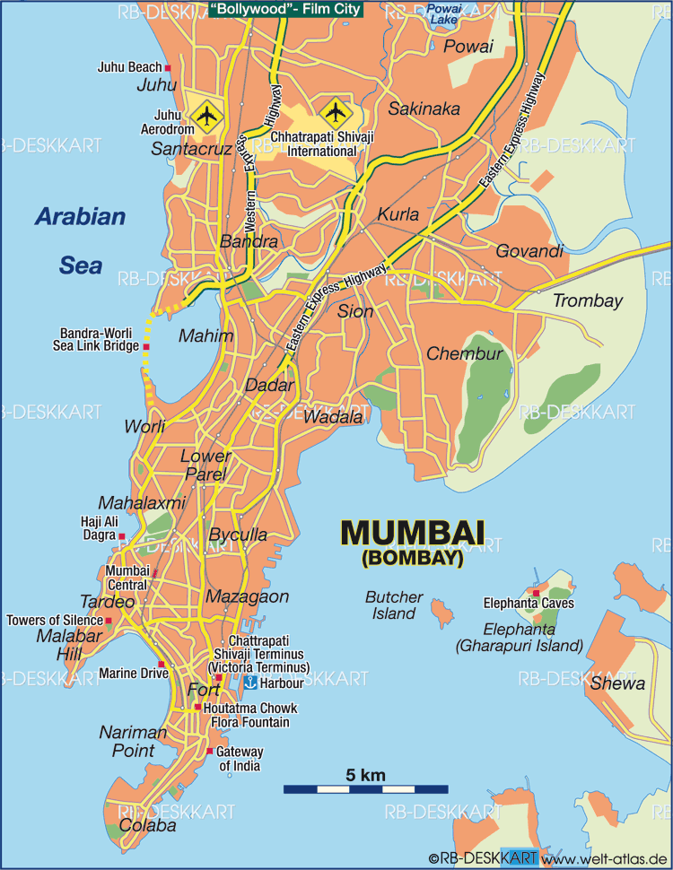
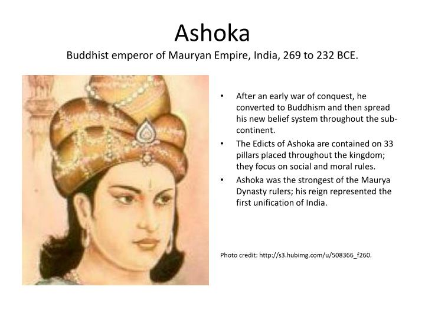
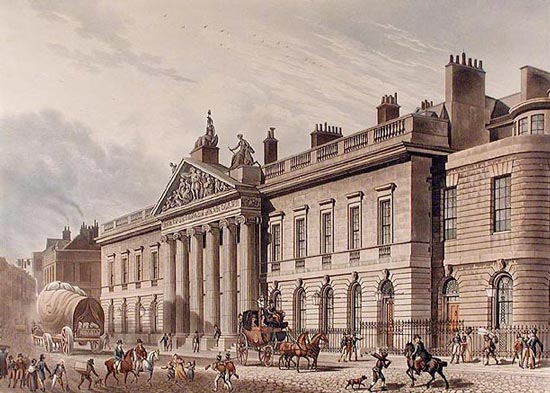
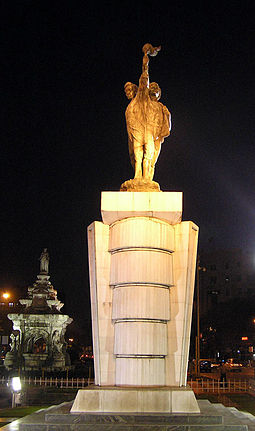
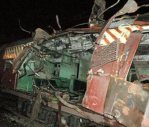
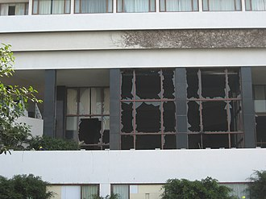

City History

Bombay, now known as Mumbai, the city of dreams and the city that never sleeps has a vast history that is turning to obscurity. Even though many of you don’t know the history of Mumbai, but the history of this dreamy city is something that the Mumbaikars are passionate about.

The name “Mumbai” is a nickname for “Mumbadevi”, a local Goddess.
This city with a beautiful and rich heritage is originally built on a group of seven islands- Colaba, Worli, Mazagaon, Parel, Mahim, Old Woman’ Island, and Bombay Island.
These islands were embodied in the Maurya Empire which was under the Buddhist Emperor Ashoka of Magadha.
Rulers of the 7 Isles

But soon after the death of the king Ashoka, these islands came under Satavahanas who are knowns as Andhras in Puranas i.e., an ancient Indian dynasty. And then the islands were ruled by different rulers after the end of another. This city has seen a lot of ruling and indulge a great and rich history.
It was 1543 AD when the islands were seized by the Portuguese from Bahadur Shah of Gujarat. The islands were ruled by the Portuguese till 1661. On May 8, 1661, the islands were yielded as a dowry to Charles II of England who married to Catherine of Portugal. So it was then when Bombay became a British possession due to a part of the dowry.
East India Company and the Industrial Revolution

In 1668, King Charles II gave up the isles to the East India Company with annual rent and soon the city was named as “Bombay”. Slowly and steadily within 7-8 years, the city grew and the population increased from 10,000 to 60,000. After seeing this rapid growth, the East India Company decided to move its headquarters from Surat to Bombay.
The period of Industrialization started when the then-governor William Hornby incorporated a project despite opposition from the East India Company. Soon after the city saw a lot of changes and an indefinite number of civil engineering projects on the way. And this was the start of the Industrial Revolution where the seven isles were finally turned into one city during 1845. Followed, in 1853, the first railway connection between Bombay and Thane was achieved. After the revolt in 1857, the East India Company lost its control over Bombay.
In 1869, Bombay became one of the major ports in India after the Suez Canal was accommodated which created a connection between the Bombay and the rest of the world.
Soon the Hindu-Muslim riots broke out again which resulted in massacres and turmoil all over the city. And followed by the Indian freedom movement started from the 1890s and lasted till 1940s till India got independence from the British rule.
History of Mumbai after independence

After the Partition of India on 15 August 1947, over 100,000 Sindhi refugees from the newly created Pakistan were relocated in the military camps five kilometres from Kalyan in the Maharashta Region. It was converted into a township in 1949, and named Ulhasnagar by the then Governor-General of India, C. Rajagopalachari.[162] In April 1950, Greater Bombay District came into existence with the merger of Bombay Suburbs and Bombay City. It spanned an area of 235.1 km2 (90.77 sq mi) and inhabited 2,339,000 of people in 1951. The Municipal Corporation limits were extended up to Jogeshwari along the Western Railway and Bhandup along the Central Railway. This limit was further extended in February 1957 up to Dahisar along the Western Railway and Mulund on the Central Railway.[163] In the 1955 Lok Sabha discussions, when Bombay State was being re-organised along linguistic lines into the states of Maharashtra and Gujarat.[164] But the States Reorganisation Committee recommended a bi-lingual state for Maharashtra-Gujarat, with Bombay as its capital. However, the Samyukta Maharashtra movement opposed this, and insisted that Bombay native of Marathi be declared the capital of Maharashtra.[165] The Indian Institute of Technology Bombay was established in 1958 at Powai, a northern suburb of Bombay.[166] Following protests by the Samyukta Maharashtra movement in which 105 people were killed by police firing, Maharashtra State was formed with Bombay as its capital on 1 May 1960.[167] Flora Fountain was renamed Hutatma Chowk ("Martyr's Square") as a memorial to the Samyukta Maharashtra movement
History of Mumbai during the 21st century

During the 21st century, the city suffered several bombings. On 6 December 2002, a bomb placed under a seat of an empty BEST (Brihanmumbai Electric Supply and Transport) bus exploded near Ghatkopar station in Mumbai. Around 2 people were killed and 28 were injured.[188] The bombing occurred on the tenth anniversary of the demolition of the Babri Mosque in Ayodhya.[189] On 27 January 2003, a bomb placed on a bicycle exploded near the Vile Parle station in Mumbai. The bomb killed 1 and injured 25. The blast occurred a day ahead of the visit of Atal Bihari Vajpayee, the then Prime Minister of India to the city.[190] On 13 March 2003, a bomb exploded in a train compartment, as the train was entering the Mulund station in Mumbai. 10 people were killed and 70 were injured. The blast occurred a day after the tenth anniversary of the 1993 Bombay bombings.[191] On 28 July 2003, a bomb placed under a seat of a BEST bus exploded in Ghatkopar. The bomb killed 4 people and injured 32.[192] On 25 August 2003, two blasts in South Mumbai – one near the Gateway of India and the other at Zaveri Bazaar in Kalbadevi occurred. At least 44 people were killed and 150 injured. No group claimed responsibility for the attack, but it had been hinted that the Pakistan-based Lashkar-e-Toiba was behind the attacks

Mumbai was lashed by torrential rains on 26–27 July 2005, during which the city was brought to a complete standstill. The city received 37 inches (940 millimeters) of rain in 24 hours — the most any Indian city has ever received in a single day. Around 83 people were killed.[194] On 11 July 2006, a series of seven bomb blasts took place over a period of 11 minutes on the Suburban Railway in Mumbai at Khar, Mahim, Matunga, Jogeshwari, Borivali, and one between Khar and Santa Cruz.[195] 209 people were killed[196] and over 700 were injured.[197] According to Mumbai Police, the bombings were carried out by Lashkar-e-Toiba and Students Islamic Movement of India (SIMI).[198] In 2008, the city experienced xenophobic attacks by the activists of the Maharashtra Navnirman Sena (MNS) under Raj Thackeray on the North Indian migrants in Mumbai.[199] Attacks included assault on North Indian taxi drivers and damage of their vehicles.[200] There were a series of ten coordinated terrorist attacks by 10 armed Pakistani men using automatic weapons and grenades which began on 26 November 2008 and ended on 29 November 2008. The attacks resulted in 164 deaths, 308 injuries, and severe damage to several important buildings.[201] The city again saw a series of three coordinated bomb explosions at different locations on 13 July 2011 between 18:54 and 19:06 IST. The blasts occurred at the Opera House, Zaveri Bazaar, and Dadar,[202] which left 26 killed, and 130 injured.[203][204] The city's Wankhede Stadium was the venue for 2011 Cricket World Cup final, where India emerged as a champion for the second time after the 1983 Cricket World Cup.